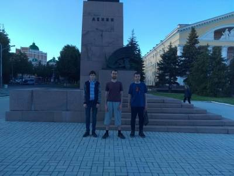

В новой эре встречи получили название "IT-прогулок" и обычно официально задукоментированы
2 марта 2019 (Open Data Day)
показать доп свидетельства
В девятый раз по всему миру отмечался День открытых данных (http://opendataday.org/). Этот день представляет собой возможность продемонстрировать преимущества нахождения определенных разновидностей данных в общественной собственности, когда они доступны всем желающим и каждый может поучаствовать в их накоплении и поддержании актуальности, если ему это необходимо для решения своих задач.
В честь Дня открытых данных участники группы из г. Кирова провели встречу, на которой обсуждались следующие темы:
- Открытые данные для оптимизации потребительского поведения Рассказ о проекте “Ценовичок”: о целях проекта, текущем состоянии и ближайших планах его развития - прилагаются видео и презентация.
- Открытая русскоязычная документация на свободное программное обеспечение Были высказаны соображения, что сегодня существует потребность в создании такого проекта.
- Открытая картография Был продемонстрирован сайт openstreetmap.org - подробная карта мира с детализацией до тропинок между домами. Картографические данные, на основе которых формируются картинки на сайте, в отличие от аналогичных проектов (например, карт Яндекса и Гугла), находятся в свободном доступе и могут редактироваться и использоваться всеми желающими.
- Коллективный перевод в электронный вид редких книг, относящихся к марксизму Вычитка распознанных текстов очень трудоемка, но она легко распараллеливается и по срокам не очень критична, поэтому ее можно делать группой.
- Общественные мифы Для их поддержания не важно, что значительная часть населения знает правду. Главное, чтобы был нужный процент людей, кто верит в миф. Материальная основа мифов - отсутствие лёгкого доступа к первоисточникам информации. Так возникает необходимость верить, потому что проверка сильно затруднена. Эксплуататорам выгодно навязывать массам ложную, иллюзорную картину мира, чтобы не допустить уничтожения частной собственности на средства производства и осуществлять политику в своих интересах.
Видео с мероприятия https://vk.com/video-83714508_456239081
20 сентября 2019 (Software Freedom Day)
показать доп свидетельства
СВОБОДНОЕ ПРОГРАММНОЕ ОБЕСПЕЧЕНИЕ: ИСТОРИЯ, СОВРЕМЕННОСТЬ, ПЕРСПЕКТИВЫ
Такова была тема лекции, проведённой 20 сентября 2019 года историческим клубом «Знание». Выступающий – магистр техники и технологии А.Ю. Соколов.
В лекции раскрывается роль автоматизации в современном обществе, описываются основные вехи развития свободного программного обеспечения, принципы и преимущества открытой разработки программ. Приведены примеры вытеснения транснациональных корпораций производящими сообществами. Перечислены проблемы внедрения открытого подхода к разработке.
Видео с мероприятия https://vk.com/video-83714508_456239098
7 марта 2020 (Open Data Day)
показать доп свидетельства
В честь международного дня открытых данных мы провели мероприятие — обсуждение Ценовичка (orv.org.ru/pricer) — нашей разработки с открытым исходным кодом. Место и время проведения — 7 марта в 13.00, Бизнес-Центр «Прайм».
Видео с мероприятия https://vk.com/video-135399655_456239018
После доклада
Сходили поесть

К этому Open Data Da'ю мы создали группу vk.com/kirov_osc
10-12 июня 2020 (Поездка K_OSC в Йошкар-Олу)
показать доп свидетельства
Ездили в Йошкар-Олу на встречу с коллегами по Open Source
15 августа 2020 (IT-прогулка)
показать доп свидетельства
ВСТРЕЧА В “ПАНОРАМЕ”
13 августа встретились в кафе “Панорама”, из которого можно смотреть на Киров с 18 этажа. Решили, что хорошо бы создать аналог Gnome Encfs Manager, в котором будут поддерживаться и другие варианты шифрования.
10 сентября 2020 (IT-прогулка)
показать доп свидетельства
ШИШКИ И ПРОМЫШЛЕННЫЕ РОБОТЫ
10 сентября пили чай из кедровых шишек и обсуждали видео про свободную автоматику для сельского хозяйства https://youtu.be/bE00L_jSrJw
22 октября 2020 (IT-прогулка)
показать доп свидетельства
ДЕНЬ ФИННО-УГОРСКОЙ СОЛИДАРНОСТИ
Сегодня в честь Дня финно-угорской солидарности встретились в столовой “Сели-поели”. Обсуждали проблемы локализации, пришли к выводу, что она должна быть наиболее удобной, сам процесс локализации должен быть максимально простым. Операционная система, которую предстоит локализовать, должна удовлетворять все потребности пользователя относительно компьютера, обладать техническим превосходством над Windows. Также сравнивали Debian и Ubuntu. Важным символом встречи явилась обложка на паспорт в марийском стиле.
P. S.: Марий улам, марла ойлем!
3 декабря 2020 (IT-прогулка)
показать доп свидетельства
Сегодня 3 декабря на встрече обсуждали теорию развития технических систем (она же - теория решения изобретательских задач - ТРИЗ) и язык программирования Rust.
24 декабря 2020 (IT-прогулка)
показать доп свидетельства
24 декабря встреча проходила в кафе Сулугуни. Смотрели двоичный сумматор (схема https://www.waitingforfriday.com/?p=529) и программируемый калькулятор. Думали про то, как развивать платные доработки СПО. Выдвинули предположение, что среди домашних пользователей были бы популярны заказы на доработку игр.
Работа двоичного сумматора https://vk.com/video-192448749_456239029
.jpg)
.jpg)
.jpg)
7 января 2021 (IT-прогулка)
показать доп свидетельства
Месяц назад под лицензией GPL был выложен исходный код клиентской и серверной частей программы Neyrokod, предназначенной для создания баз знаний (как локальных, так и совместно редактируемых). Наша встреча 7 января была посвящена организационным и техническим вопросам создания полноценного сообщества вокруг проекта OpenNeyrokod и особенно нашего форка от него (https://github.com/keremet/open_neyrokod).
6 марта 2021 (Open Data Day)
показать доп свидетельства
МЕЖДУНАРОДНЫЙ ДЕНЬ ОТКРЫТЫХ ДАННЫХ
6 марта мы отметили День открытых данных встречей, на которой были зачитаны два доклада: 1. “Сбор информации об ошибках в свободных программах и пожеланий по их доработкам”; 2. “Открытые данные для оптимизации потребительского поведения” - про текущее состояние Ценовичка и планы по развитию этого проекта.
27 мая 2021 (IT-прогулка)
27.05.2021
15-18 июня 2021 (Поездка K_OSC в Переславль-Залесский)
15-18.06.2021
12 августа 2021 (IT-прогулка)
12.08.2021
19 августа 2021 (IT-прогулка)
19.08.2021
17 сентября 2021 (Software Freedom Day)
17.09.2021
19 ноября 2021 (IT-прогулка)
19.11.2021
5-8 января 2022 (Поездка K_OSC в Москву и Санкт-Петербург)
05-08.01.2022
20 марта 2022 (IT-прогулка)
20.03.2022
3 апреля 2022 (IT-прогулка)
03.04.2022
7 апреля 2022 (IT-прогулка)
07.04.2022
7 мая 2022 (Поездка K_OSC в Сыктывкар)
07.05.2022
19 мая 2022 (IT-прогулка)
19.05.2022
19-22 мая 2022 (Поездка K_OSC в Переславль-Залесский)
19-22.05.2022
18 июня 2022 (Поездка K_OSC в Йошкар-Олу)
18.06.2022
30 июня 2022 (IT-прогулка)
30.06.2022
7 июля 2022 (IT-прогулка)
07.07.2022
11 августа 2022 (IT-прогулка)
11.08.2022
30 сентября 2022 (Software Freedom Day)
30.09.2022
21 октября 2022 (Культурная пятница)
21.10.2023
17 ноября 2022 (IT-прогулка)
17.11.2023
24-25 ноября 2022 (Поездка участника K_OSC в Москву)
24-25.11.2023
8 декабря 2022 (IT-прогулка, создали новый логотип)
08.12.2022
26 января 2023 (IT-прогулка)
26.01.2023
27-29 января 2023 (Поездка участника K_OSC в Переславль)
27-29.01.2023
2 февраля 2023 (IT-прогулка)
02.02.2023
23 февраля 2023 (IT-прогулка)
23.02.2023
6 марта 2023 (Open Data Day)
06.03.2023
3-4 апреля 2023 (Поездка участника K_OSC в Москву)
03-04.04.2023
13 апреля 2023 (Семинар)
13.04.2023
4 мая 2023 (IT-прогулка)
04.05.2023
11 мая 2023 (Семинар)
11.05.2023
18 мая 2023 (IT-прогулка)
18.05.2023
25 мая 2023 (IT-прогулка)
25.05.2023
01 июня 2023 (IT-прогулка)
01.06.2023
08 июня 2023 (Семинар)
08.06.2023
15 июня 2023 (IT-прогулка)
15.06.2023
17-18 июня 2023 (Поездка K_OSC в Йошкар-Олу)
17-18.06.2023